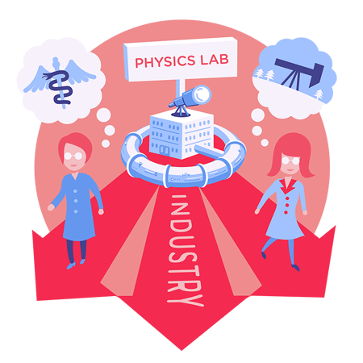

粒子物理如何改进你的生活
译注：一般人总是以为粒子物理距离我们的生活很远。其实，它离我们真的很近，你会在日常生活中与它不经意地擦肩而过。
纸尿裤
利用粒子加速器，化学家第一次理解了高吸水性聚合物的详细的潮湿结构，这些高吸水性聚合物就应用在纸尿裤中。这使得他们能够调节和改进高吸水性聚合物的分子式，从而获得更完美的材料——这已被应用在每个当今的纸尿裤中。
热缩包装
如果你买了只火鸡，它能够保鲜，这个你得感谢粒子加速器。几十年来，食品产业一直使用粒子加速器来生产高强度的热缩薄膜，从而让火鸡——也包括水果和蔬菜、烘焙食品、棋盘和 DVD——可以被封装起来。
货厢扫描
每年，美国有超过 20 亿吨货物要通过港口和水路。许多港口如今都采用粒子加速器产生的高能 X-射线来鉴别违禁品以保障港口安全。这些 X-射线可以穿透很深并能够识别货厢的更多细节。
磁共振成像
这个救命的医疗技术现在称为磁共振成像，它能够对人体的软组织进行详细成像。与 X-射线不同，磁共振成像能够从大脑的白质中区分出灰质，能从非癌变组织中区分出癌变组织，能从器官中区分出肌肉，也能够揭露血液流动与中风的征兆。
人力开发

许多经过粒子物理训练的人转行到工业、医药、计算机或其它能够发挥其特长的领域。你会发现一名粒子探测器专家正在勘探油井，或者一名加速器科学家正在从事癌症治疗的工作。
人工心瓣
通过用加速器产生的银离子轰击办法，物理学家设计了一种新材料，它增强了人工心瓣的安全性。加工后的材料表面能够避免人体将心瓣当作入侵物，从而避免在其周围产生一些有潜在危险的额外组织。
研究用的高强光源

环状粒子加速器令高速电子弯曲，导致电子发光。这种光在多种应用中是一种强大的研究工具。专门的同步辐射加速器也称之为光源，可以让科学家控制光的波长与强度用于研究更好的电池、绿色能源、新的高性能材料、更有效的药物治疗以及对自然界进行更深入的认识。
网格计算
万维网并不是粒子物理对计算领域唯一的促进。为满足 LHC 实验的计算需求，粒子物理学家创造了世界上最大的网格计算系统，跨越 36 个国家 100 多所研究机构，大大促进了全球网络和分布式计算的发展。
家俱抛光
四分之一个世纪以来，世界上许多公司都在使用粒子加速器产生的电子束来制造防刮、防污的家俱。这样处理后的凳子、架子和桌子，其表面看起来象是木头，但非常耐磨。